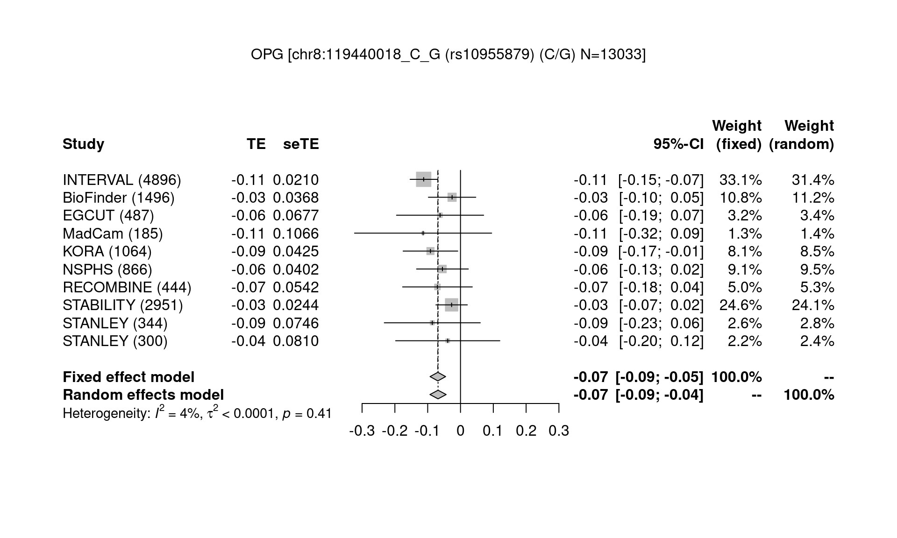
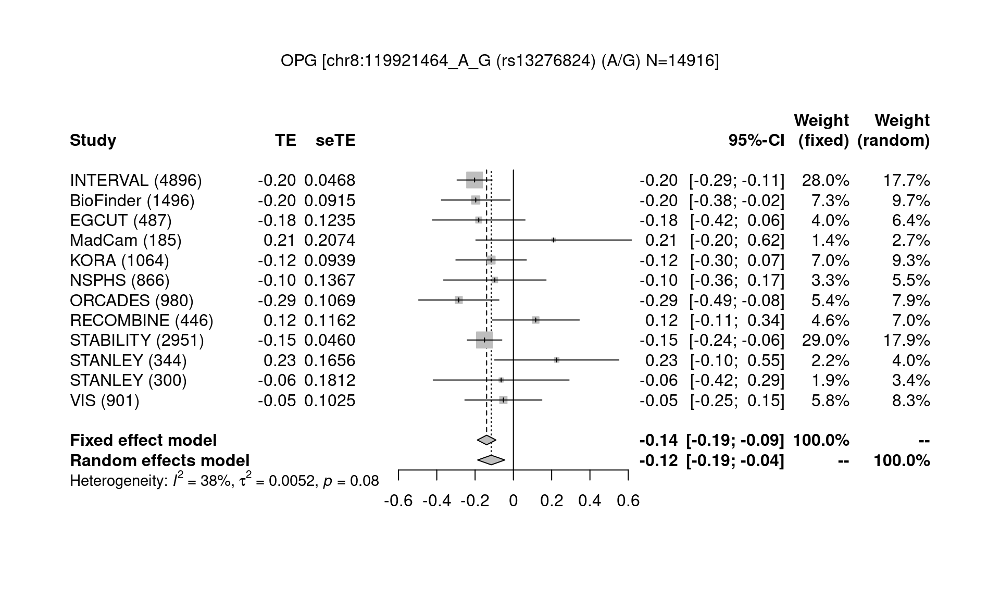
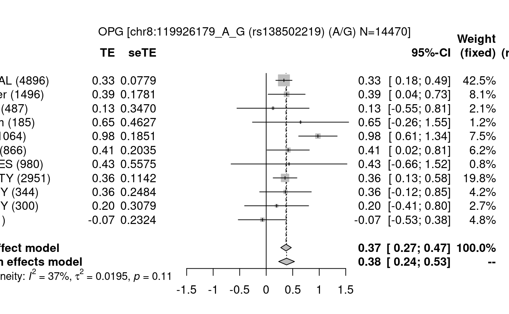

We describe some functions from R/gap.
invnormal
The function is widely used in various consortium analyses and defined as follows,
An example use on data from Poisson distribution is as follows,
gc.lambda
The definition is as follows,
gc.lambda <- function(p) {
p <- p[!is.na(p)]
n <- length(p)
obs <- qchisq(p,1,lower.tail=FALSE)
exp <- qchisq(1:n/n,1,lower.tail=FALSE)
lambda <- median(obs)/median(exp)
return(lambda)
}
# A simplified version is as follows,
# obs <- median(chisq)
# exp <- qchisq(0.5, 1) # 0.4549364
# lambda <- obs/exp
# see also estlambda from GenABEL and qq.chisq from snpStats
# A related function
lambda1000 <- function(lambda, ncases, ncontrols)
1 + (lambda - 1) * (1 / ncases + 1 / ncontrols)/( 1 / 1000 + 1 / 1000)METAL.forestplot
The following is the documentation example,
require(gap)
require(gap.datasets)
data(OPG)
METAL_forestplot(OPGtbl,OPGall,OPGrsid,width=8.75,height=5)
#> [1] "1-OPG:chr8:119440018_C_G"
#> CHR POS STRAND N EFFECT_ALLELE REFERENCE_ALLELE CODE_ALL_FQ
#> 3102 8 119440018 <NA> 4896 G C 0.6544730
#> 3103 8 119440018 <NA> 1496 C G 0.3963900
#> 3104 8 119440018 + 487 G C 0.6292000
#> 3105 8 119440018 + 185 G C 0.6567570
#> 3106 8 119440018 <NA> 1064 G C 0.6318490
#> 3107 8 119440018 <NA> 866 C G 0.3350000
#> 3108 8 119440018 + 444 C G 0.3446000
#> 3109 8 119440018 + 2951 G C 0.6231345
#> 3110 8 119440018 <NA> 344 C G 0.3676000
#> 3111 8 119440018 <NA> 300 C G 0.3631000
#> BETA SE PVAL RSQ RSQ_IMP IMP prot study
#> 3102 0.11223700 0.02103850 9.994910e-08 NA 0.989189 NA OPG INTERVAL
#> 3103 -0.02561350 0.03679860 4.865080e-01 NA NA NA OPG BioFinder
#> 3104 0.06230000 0.06770000 3.582000e-01 NA 0.959100 1 OPG EGCUT
#> 3105 0.11400000 0.10660000 2.864000e-01 0.006207 0.976000 1 OPG MadCam
#> 3106 0.09158860 0.04245590 3.121030e-02 NA 0.957157 NA OPG KORA
#> 3107 -0.05505878 0.04021724 1.709886e-01 NA NA NA OPG NSPHS
#> 3108 -0.07024000 0.05416000 1.954000e-01 NA 0.968610 1 OPG RECOMBINE
#> 3109 0.02705780 0.02440500 2.675600e-01 NA 0.989080 1 OPG STABILITY
#> 3110 -0.08600000 0.07460000 2.500000e-01 NA 1.045800 NA OPG STANLEY
#> 3111 -0.03890000 0.08100000 6.310000e-01 NA 0.984500 NA OPG STANLEY
#> MarkerName
#> 3102 chr8:119440018_C_G
#> 3103 chr8:119440018_C_G
#> 3104 chr8:119440018_C_G
#> 3105 chr8:119440018_C_G
#> 3106 chr8:119440018_C_G
#> 3107 chr8:119440018_C_G
#> 3108 chr8:119440018_C_G
#> 3109 chr8:119440018_C_G
#> 3110 chr8:119440018_C_G
#> 3111 chr8:119440018_C_G
#> A1 A2 EFFECT_ALLELE REFERENCE_ALLELE a1 a2
#> [1,] "C" "G" "G" "C" "C" "G" " 0.1122" "-0.1122"
#> [2,] "C" "G" "C" "G" "C" "G" "-0.0256" "-0.0256"
#> [3,] "C" "G" "G" "C" "C" "G" " 0.0623" "-0.0623"
#> [4,] "C" "G" "G" "C" "C" "G" " 0.1140" "-0.1140"
#> [5,] "C" "G" "G" "C" "C" "G" " 0.0916" "-0.0916"
#> [6,] "C" "G" "C" "G" "C" "G" "-0.0551" "-0.0551"
#> [7,] "C" "G" "C" "G" "C" "G" "-0.0702" "-0.0702"
#> [8,] "C" "G" "G" "C" "C" "G" " 0.0271" "-0.0271"
#> [9,] "C" "G" "C" "G" "C" "G" "-0.0860" "-0.0860"
#> [10,] "C" "G" "C" "G" "C" "G" "-0.0389" "-0.0389"
#> prot = OPG MarkerName = chr8:119440018_C_G Q = 9.348983 df = 9 p = 0.4057033 I2 = 0.03732847 lower.I2 = 0 upper.I2 = 0.6377677
#> [1] "2-OPG:chr8:119642885_A_C"
#> CHR POS STRAND N EFFECT_ALLELE REFERENCE_ALLELE CODE_ALL_FQ
#> 3124 8 119642885 <NA> 4896 C A 0.9084870
#> 3125 8 119642885 <NA> 1496 A C 0.0892380
#> 3126 8 119642885 + 487 C A 0.9080000
#> 3127 8 119642885 + 185 C A 0.9081080
#> 3128 8 119642885 <NA> 1064 C A 0.9112190
#> 3129 8 119642885 <NA> 866 A C 0.0553400
#> 3130 8 119642885 + 980 C A 0.8799000
#> 3131 8 119642885 + 442 A C 0.0825800
#> 3132 8 119642885 + 2951 C A 0.9132497
#> 3133 8 119642885 <NA> 344 A C 0.1121000
#> 3134 8 119642885 <NA> 300 A C 0.0923000
#> 3135 8 119642885 + 901 C A 0.9376000
#> BETA SE PVAL RSQ RSQ_IMP IMP prot study
#> 3124 -0.0492974 0.0349784 0.1587900 NA 0.992354 NA OPG INTERVAL
#> 3125 0.0357636 0.0653470 0.5842630 NA NA NA OPG BioFinder
#> 3126 0.0377000 0.1264000 0.7659000 NA 0.770500 1 OPG EGCUT
#> 3127 -0.3194000 0.1845000 0.0851500 0.0161100 0.999000 1 OPG MadCam
#> 3128 -0.0340373 0.0727260 0.6398670 NA 0.973311 NA OPG KORA
#> 3129 0.1185842 0.0834134 0.1551296 NA NA NA OPG NSPHS
#> 3130 -0.1150210 0.0666990 0.0849000 0.0030310 0.997236 1 OPG ORCADES
#> 3131 0.0865200 0.0922200 0.3487000 NA 0.840700 1 OPG RECOMBINE
#> 3132 -0.0930220 0.0414659 0.0248752 NA 1.000000 1 OPG STABILITY
#> 3133 0.0266000 0.1185000 0.8225000 NA 0.971900 NA OPG STANLEY
#> 3134 -0.1771000 0.1329000 0.1836000 NA 1.004900 NA OPG STANLEY
#> 3135 -0.0808660 0.0993270 0.4160000 0.0007367 0.990371 1 OPG VIS
#> MarkerName
#> 3124 chr8:119642885_A_C
#> 3125 chr8:119642885_A_C
#> 3126 chr8:119642885_A_C
#> 3127 chr8:119642885_A_C
#> 3128 chr8:119642885_A_C
#> 3129 chr8:119642885_A_C
#> 3130 chr8:119642885_A_C
#> 3131 chr8:119642885_A_C
#> 3132 chr8:119642885_A_C
#> 3133 chr8:119642885_A_C
#> 3134 chr8:119642885_A_C
#> 3135 chr8:119642885_A_C
#> A1 A2 EFFECT_ALLELE REFERENCE_ALLELE a1 a2
#> [1,] "A" "C" "C" "A" "A" "C" "-0.0493" " 0.0493"
#> [2,] "A" "C" "A" "C" "A" "C" " 0.0358" " 0.0358"
#> [3,] "A" "C" "C" "A" "A" "C" " 0.0377" "-0.0377"
#> [4,] "A" "C" "C" "A" "A" "C" "-0.3194" " 0.3194"
#> [5,] "A" "C" "C" "A" "A" "C" "-0.0340" " 0.0340"
#> [6,] "A" "C" "A" "C" "A" "C" " 0.1186" " 0.1186"
#> [7,] "A" "C" "C" "A" "A" "C" "-0.1150" " 0.1150"
#> [8,] "A" "C" "A" "C" "A" "C" " 0.0865" " 0.0865"
#> [9,] "A" "C" "C" "A" "A" "C" "-0.0930" " 0.0930"
#> [10,] "A" "C" "A" "C" "A" "C" " 0.0266" " 0.0266"
#> [11,] "A" "C" "A" "C" "A" "C" "-0.1771" "-0.1771"
#> [12,] "A" "C" "C" "A" "A" "C" "-0.0809" " 0.0809"#> prot = OPG MarkerName = chr8:119642885_A_C Q = 8.078703 df = 11 p = 0.7062369 I2 = 0 lower.I2 = 0 upper.I2 = 0.432433
#> [1] "3-OPG:chr8:119921464_A_G"
#> CHR POS STRAND N EFFECT_ALLELE REFERENCE_ALLELE CODE_ALL_FQ
#> 3136 8 119921464 <NA> 4896 A G 0.9495100
#> 3137 8 119921464 <NA> 1496 G A 0.0434492
#> 3138 8 119921464 + 487 A G 0.9284000
#> 3139 8 119921464 + 185 A G 0.9405410
#> 3140 8 119921464 <NA> 1064 A G 0.9483820
#> 3141 8 119921464 <NA> 866 G A 0.0205700
#> 3142 8 119921464 + 980 A G 0.9520000
#> 3143 8 119921464 + 446 G A 0.0504500
#> 3144 8 119921464 + 2951 A G 0.9311001
#> 3145 8 119921464 <NA> 344 A G 0.9480000
#> 3146 8 119921464 <NA> 300 A G 0.9494000
#> 3147 8 119921464 + 901 A G 0.9442000
#> BETA SE PVAL RSQ RSQ_IMP IMP prot study
#> 3136 -0.20252400 0.0468371 0.0000156269 NA 0.985334 NA OPG INTERVAL
#> 3137 0.19649100 0.0914891 0.0318982000 NA NA NA OPG BioFinder
#> 3138 -0.18080000 0.1235000 0.1438000000 NA 1.009500 1 OPG EGCUT
#> 3139 0.21050000 0.2074000 0.3116000000 0.0055940 0.999000 1 OPG MadCam
#> 3140 -0.11625700 0.0939334 0.2161180000 NA 0.992708 NA OPG KORA
#> 3141 0.09688457 0.1366738 0.4784024385 NA NA NA OPG NSPHS
#> 3142 -0.28509400 0.1068760 0.0077700000 0.0072230 0.999470 1 OPG ORCADES
#> 3143 -0.11690000 0.1162000 0.3153000000 NA 0.883950 1 OPG RECOMBINE
#> 3144 -0.15049600 0.0460020 0.0010697400 NA 0.996641 1 OPG STABILITY
#> 3145 0.22640000 0.1656000 0.1725000000 NA 0.998200 NA OPG STANLEY
#> 3146 -0.06390000 0.1812000 0.7247000000 NA 0.946700 NA OPG STANLEY
#> 3147 -0.05226400 0.1024950 0.6100000000 0.0002891 0.980735 1 OPG VIS
#> MarkerName
#> 3136 chr8:119921464_A_G
#> 3137 chr8:119921464_A_G
#> 3138 chr8:119921464_A_G
#> 3139 chr8:119921464_A_G
#> 3140 chr8:119921464_A_G
#> 3141 chr8:119921464_A_G
#> 3142 chr8:119921464_A_G
#> 3143 chr8:119921464_A_G
#> 3144 chr8:119921464_A_G
#> 3145 chr8:119921464_A_G
#> 3146 chr8:119921464_A_G
#> 3147 chr8:119921464_A_G
#> A1 A2 EFFECT_ALLELE REFERENCE_ALLELE a1 a2
#> [1,] "A" "G" "A" "G" "A" "G" "-0.2025" "-0.2025"
#> [2,] "A" "G" "G" "A" "A" "G" " 0.1965" "-0.1965"
#> [3,] "A" "G" "A" "G" "A" "G" "-0.1808" "-0.1808"
#> [4,] "A" "G" "A" "G" "A" "G" " 0.2105" " 0.2105"
#> [5,] "A" "G" "A" "G" "A" "G" "-0.1163" "-0.1163"
#> [6,] "A" "G" "G" "A" "A" "G" " 0.0969" "-0.0969"
#> [7,] "A" "G" "A" "G" "A" "G" "-0.2851" "-0.2851"
#> [8,] "A" "G" "G" "A" "A" "G" "-0.1169" " 0.1169"
#> [9,] "A" "G" "A" "G" "A" "G" "-0.1505" "-0.1505"
#> [10,] "A" "G" "A" "G" "A" "G" " 0.2264" " 0.2264"
#> [11,] "A" "G" "A" "G" "A" "G" "-0.0639" "-0.0639"
#> [12,] "A" "G" "A" "G" "A" "G" "-0.0523" "-0.0523"
#> prot = OPG MarkerName = chr8:119921464_A_G Q = 17.87909 df = 11 p = 0.08442896 I2 = 0.3847561 lower.I2 = 0 upper.I2 = 0.6887314
#> [1] "4-OPG:chr8:119926179_A_G"
#> CHR POS STRAND N EFFECT_ALLELE REFERENCE_ALLELE CODE_ALL_FQ
#> 3148 8 119926179 <NA> 4896 A G 0.01952090
#> 3149 8 119926179 <NA> 1496 A G 0.01069520
#> 3150 8 119926179 + 487 A G 0.01090000
#> 3151 8 119926179 + 185 A G 0.01351350
#> 3152 8 119926179 <NA> 1064 A G 0.01497830
#> 3153 8 119926179 <NA> 866 A G 0.01028000
#> 3154 8 119926179 + 980 A G 0.00190000
#> 3155 8 119926179 + 2951 A G 0.01485005
#> 3156 8 119926179 <NA> 344 A G 0.02940000
#> 3157 8 119926179 <NA> 300 A G 0.02370000
#> 3158 8 119926179 + 901 A G 0.01170000
#> BETA SE PVAL RSQ RSQ_IMP IMP prot study
#> 3148 0.3341820 0.0779369 1.838820e-05 NA 0.869054 NA OPG INTERVAL
#> 3149 0.3851490 0.1781200 3.075290e-02 NA NA NA OPG BioFinder
#> 3150 0.1284000 0.3470000 7.114000e-01 NA 0.788600 1 OPG EGCUT
#> 3151 0.6479000 0.4627000 1.631000e-01 0.0106000 0.768000 1 OPG MadCam
#> 3152 0.9752670 0.1851170 1.667950e-07 NA 0.750608 NA OPG KORA
#> 3153 0.4141958 0.2034716 4.178607e-02 NA NA NA OPG NSPHS
#> 3154 0.4304190 0.5574670 4.410000e-01 0.0006092 0.861744 1 OPG ORCADES
#> 3155 0.3552290 0.1142150 1.869770e-03 NA 0.736991 1 OPG STABILITY
#> 3156 0.3636000 0.2484000 1.442000e-01 NA 0.766100 NA OPG STANLEY
#> 3157 0.1963000 0.3079000 5.243000e-01 NA 0.679900 NA OPG STANLEY
#> 3158 -0.0713560 0.2324130 7.590000e-01 0.0001048 0.904365 1 OPG VIS
#> MarkerName
#> 3148 chr8:119926179_A_G
#> 3149 chr8:119926179_A_G
#> 3150 chr8:119926179_A_G
#> 3151 chr8:119926179_A_G
#> 3152 chr8:119926179_A_G
#> 3153 chr8:119926179_A_G
#> 3154 chr8:119926179_A_G
#> 3155 chr8:119926179_A_G
#> 3156 chr8:119926179_A_G
#> 3157 chr8:119926179_A_G
#> 3158 chr8:119926179_A_G
#> A1 A2 EFFECT_ALLELE REFERENCE_ALLELE a1 a2
#> [1,] "A" "G" "A" "G" "A" "G" " 0.3342" " 0.3342"
#> [2,] "A" "G" "A" "G" "A" "G" " 0.3851" " 0.3851"
#> [3,] "A" "G" "A" "G" "A" "G" " 0.1284" " 0.1284"
#> [4,] "A" "G" "A" "G" "A" "G" " 0.6479" " 0.6479"
#> [5,] "A" "G" "A" "G" "A" "G" " 0.9753" " 0.9753"
#> [6,] "A" "G" "A" "G" "A" "G" " 0.4142" " 0.4142"
#> [7,] "A" "G" "A" "G" "A" "G" " 0.4304" " 0.4304"
#> [8,] "A" "G" "A" "G" "A" "G" " 0.3552" " 0.3552"
#> [9,] "A" "G" "A" "G" "A" "G" " 0.3636" " 0.3636"
#> [10,] "A" "G" "A" "G" "A" "G" " 0.1963" " 0.1963"
#> [11,] "A" "G" "A" "G" "A" "G" "-0.0714" "-0.0714"
#> prot = OPG MarkerName = chr8:119926179_A_G Q = 15.7491 df = 10 p = 0.1070435 I2 = 0.365043 lower.I2 = 0 upper.I2 = 0.6878966
#> [1] "5-OPG:chr8:120081031_C_T"
#> CHR POS STRAND N EFFECT_ALLELE REFERENCE_ALLELE CODE_ALL_FQ
#> 3159 8 120081031 <NA> 4896.01 C T 0.4641600
#> 3160 8 120081031 <NA> 1496.00 C T 0.4645720
#> 3161 8 120081031 + 487.00 C T 0.4370000
#> 3162 8 120081031 + 185.00 C T 0.4837840
#> 3163 8 120081031 <NA> 1064.00 C T 0.4603700
#> 3164 8 120081031 <NA> 866.00 C T 0.3771000
#> 3165 8 120081031 + 980.00 C T 0.4168000
#> 3166 8 120081031 + 2951.00 C T 0.4251596
#> 3167 8 120081031 <NA> 344.00 T C 0.5327000
#> 3168 8 120081031 <NA> 300.00 T C 0.5378000
#> 3169 8 120081031 + 901.00 C T 0.4394000
#> BETA SE PVAL RSQ RSQ_IMP IMP prot study
#> 3159 0.20785500 0.02040730 4.00719e-24 NA 0.952870 NA OPG INTERVAL
#> 3160 0.12015700 0.03665480 1.06925e-03 NA NA NA OPG BioFinder
#> 3161 0.28040000 0.06140000 6.27800e-06 NA 1.062800 1 OPG EGCUT
#> 3162 0.10950000 0.10580000 3.02000e-01 0.00582 0.976000 1 OPG MadCam
#> 3163 0.11560800 0.04247710 6.60283e-03 NA 0.937718 NA OPG KORA
#> 3164 0.08881362 0.03951266 2.45937e-02 NA NA NA OPG NSPHS
#> 3165 0.23512600 0.04560600 3.05000e-07 0.02646 0.996747 1 OPG ORCADES
#> 3166 0.14266000 0.02380120 2.04970e-09 NA 0.982650 1 OPG STABILITY
#> 3167 -0.12270000 0.07610000 1.07600e-01 NA 0.935700 NA OPG STANLEY
#> 3168 -0.28820000 0.07590000 1.72500e-04 NA 1.001300 NA OPG STANLEY
#> 3169 0.18792900 0.04801300 9.70000e-05 0.01676 0.985155 1 OPG VIS
#> MarkerName
#> 3159 chr8:120081031_C_T
#> 3160 chr8:120081031_C_T
#> 3161 chr8:120081031_C_T
#> 3162 chr8:120081031_C_T
#> 3163 chr8:120081031_C_T
#> 3164 chr8:120081031_C_T
#> 3165 chr8:120081031_C_T
#> 3166 chr8:120081031_C_T
#> 3167 chr8:120081031_C_T
#> 3168 chr8:120081031_C_T
#> 3169 chr8:120081031_C_T
#> A1 A2 EFFECT_ALLELE REFERENCE_ALLELE a1 a2
#> [1,] "T" "C" "C" "T" "T" "C" " 0.2079" "-0.2079"
#> [2,] "T" "C" "C" "T" "T" "C" " 0.1202" "-0.1202"
#> [3,] "T" "C" "C" "T" "T" "C" " 0.2804" "-0.2804"
#> [4,] "T" "C" "C" "T" "T" "C" " 0.1095" "-0.1095"
#> [5,] "T" "C" "C" "T" "T" "C" " 0.1156" "-0.1156"
#> [6,] "T" "C" "C" "T" "T" "C" " 0.0888" "-0.0888"
#> [7,] "T" "C" "C" "T" "T" "C" " 0.2351" "-0.2351"
#> [8,] "T" "C" "C" "T" "T" "C" " 0.1427" "-0.1427"
#> [9,] "T" "C" "T" "C" "T" "C" "-0.1227" "-0.1227"
#> [10,] "T" "C" "T" "C" "T" "C" "-0.2882" "-0.2882"
#> [11,] "T" "C" "C" "T" "T" "C" " 0.1879" "-0.1879"#> prot = OPG MarkerName = chr8:120081031_C_T Q = 21.02084 df = 10 p = 0.0209487 I2 = 0.5242817 lower.I2 = 0.05608321 upper.I2 = 0.7602459
#> [1] "6-OPG:chr17:26694861_A_G"
#> CHR POS STRAND N EFFECT_ALLELE REFERENCE_ALLELE CODE_ALL_FQ
#> 3170 17 26694861 <NA> 4896 A G 0.4793720
#> 3171 17 26694861 <NA> 1496 A G 0.4782750
#> 3172 17 26694861 + 487 A G 0.4374000
#> 3173 17 26694861 + 185 A G 0.4864860
#> 3174 17 26694861 <NA> 1064 A G 0.4747180
#> 3175 17 26694861 <NA> 866 A G 0.3678000
#> 3176 17 26694861 + 980 A G 0.5480000
#> 3177 17 26694861 + 448 A G 0.4643000
#> 3178 17 26694861 + 2951 A G 0.4937309
#> 3179 17 26694861 <NA> 344 A G 0.4753000
#> 3180 17 26694861 <NA> 300 A G 0.4792000
#> 3181 17 26694861 + 901 A G 0.4405000
#> BETA SE PVAL RSQ RSQ_IMP IMP prot study
#> 3170 -0.15966100 0.02009790 2.407140e-15 NA 0.990513 NA OPG INTERVAL
#> 3171 -0.19614900 0.03614340 6.679290e-08 NA NA NA OPG BioFinder
#> 3172 -0.24210000 0.06400000 1.758000e-04 NA 0.990100 1 OPG EGCUT
#> 3173 0.02380000 0.10310000 8.177000e-01 0.0002911 1.000000 1 OPG MadCam
#> 3174 -0.12750700 0.04464980 4.378140e-03 NA 0.830992 NA OPG KORA
#> 3175 -0.07722141 0.03815386 4.297558e-02 NA NA NA OPG NSPHS
#> 3176 -0.13963100 0.04561400 2.280000e-03 0.0094900 0.992528 1 OPG ORCADES
#> 3177 -0.09193000 0.05028000 6.819000e-02 NA 0.997810 0 OPG RECOMBINE
#> 3178 -0.11474600 0.02352470 1.073540e-06 NA 1.000000 0 OPG STABILITY
#> 3179 -0.23220000 0.07130000 1.245000e-03 NA 1.038300 NA OPG STANLEY
#> 3180 -0.14730000 0.07940000 6.442000e-02 NA 0.940400 NA OPG STANLEY
#> 3181 -0.09842100 0.04723900 3.750000e-02 0.0048050 0.979342 1 OPG VIS
#> MarkerName
#> 3170 chr17:26694861_A_G
#> 3171 chr17:26694861_A_G
#> 3172 chr17:26694861_A_G
#> 3173 chr17:26694861_A_G
#> 3174 chr17:26694861_A_G
#> 3175 chr17:26694861_A_G
#> 3176 chr17:26694861_A_G
#> 3177 chr17:26694861_A_G
#> 3178 chr17:26694861_A_G
#> 3179 chr17:26694861_A_G
#> 3180 chr17:26694861_A_G
#> 3181 chr17:26694861_A_G
#> A1 A2 EFFECT_ALLELE REFERENCE_ALLELE a1 a2
#> [1,] "A" "G" "A" "G" "A" "G" "-0.1597" "-0.1597"
#> [2,] "A" "G" "A" "G" "A" "G" "-0.1961" "-0.1961"
#> [3,] "A" "G" "A" "G" "A" "G" "-0.2421" "-0.2421"
#> [4,] "A" "G" "A" "G" "A" "G" " 0.0238" " 0.0238"
#> [5,] "A" "G" "A" "G" "A" "G" "-0.1275" "-0.1275"
#> [6,] "A" "G" "A" "G" "A" "G" "-0.0772" "-0.0772"
#> [7,] "A" "G" "A" "G" "A" "G" "-0.1396" "-0.1396"
#> [8,] "A" "G" "A" "G" "A" "G" "-0.0919" "-0.0919"
#> [9,] "A" "G" "A" "G" "A" "G" "-0.1147" "-0.1147"
#> [10,] "A" "G" "A" "G" "A" "G" "-0.2322" "-0.2322"
#> [11,] "A" "G" "A" "G" "A" "G" "-0.1473" "-0.1473"
#> [12,] "A" "G" "A" "G" "A" "G" "-0.0984" "-0.0984"
#> prot = OPG MarkerName = chr17:26694861_A_G Q = 15.72847 df = 11 p = 0.1515146 I2 = 0.3006311 lower.I2 = 0 upper.I2 = 0.6467597mhtplot.trunc
Again this is the documentation example,
options(width=120)
require(gap.datasets)
mhtdata <- within(mhtdata, {z=qnorm(p/2, lower.tail=FALSE)})
mhtplot.trunc(mhtdata, chr = "chr", bp = "pos", z = "z", snp = "rsn", y.brk1=10, y.brk2=12, mtext.line=2.5)
# https://portals.broadinstitute.org/collaboration/
# giant/images/0/0f/Meta-analysis_Locke_et_al+UKBiobank_2018.txt.gz
gz <- gzfile("work/Meta-analysis_Locke_et_al+UKBiobank_2018_UPDATED.txt.gz")
BMI <- within(read.delim(gz,as.is=TRUE), {Z <- BETA/SE})
print(subset(BMI[c("CHR","POS","SNP","P")],CHR!=16 & P<=1e-150))
library(Rmpfr)
print(within(subset(BMI, P==0, select=c(CHR,POS,SNP,Z)),
{P <- format(2*pnorm(mpfr(abs(Z),100),lower.tail=FALSE)); Pvalue <- pvalue(Z); log10P <- -log10p(Z)}))
png("BMI.png", res=300, units="in", width=9, height=6)
par(oma=c(0,0,0,0), mar=c(5,6.5,1,1))
mhtplot.trunc(BMI, chr="CHR", bp="POS", z="Z", snp="SNP",
suggestiveline=FALSE, genomewideline=-log10(1e-8),
cex.mtext=1.2, cex.text=1.2,
annotatelog10P=156, annotateTop = FALSE, highlight=c("rs13021737","rs17817449","rs6567160"),
mtext.line=3, y.brk1=200, y.brk2=280, cex.axis=1.2, cex.y=1.2, cex=0.5,
y.ax.space=20,
col = c("blue4", "skyblue")
)
dev.off()The plot for the GIANT data is shown here, https://jinghuazhao.github.io/Omics-analysis/BMI/.
cnvplot and circos.cnvplot
These are a functions to plot distribution of CNVs,

circos.cnvplot(cnv)
#> Warning in genomicPanelFun(df[2:3], df[-(1:3)], .param = .param): NAs introduced
#> by coercion
#> Warning in genomicPanelFun(df[2:3], df[-(1:3)], .param = .param): NAs introduced
#> by coercion
cs
This is a function for credible set.
# zcat METAL/4E.BP1-1.tbl.gz | \
# awk 'NR==1 || ($1==4 && $2 >= 187158034 - 1e6 && $2 < 187158034 + 1e6)' > 4E.BP1.z
tbl <- within(read.delim("4E.BP1.z"),{logp <- logp(Effect/StdErr)})
z <- cs(tbl)
l <- cs(tbl,log_p="logp")chr_pos_a1_a2 and inv_chr_pos_a1_a2
They are functions to handle SNPid.
s <- chr_pos_a1_a2(1,c(123,321),letters[1:2],letters[2:1])
inv_chr_pos_a1_a2(s)
#> chr pos a1 a2
#> chr1:123_A_B chr1 123 A B
#> chr1:321_A_B chr1 321 A B
inv_chr_pos_a1_a2("chr1:123-A_B",seps=c(":","-","_"))
#> chr pos a1 a2
#> chr1:123-A_B chr1 123 A Bsnptest_sample
This is a function to output sample file for SNPTEST.
d <- data.frame(ID_1=1,ID_2=1,missing=0,PC1=1,PC2=2,D1=1,P1=10)
snptest_sample(d,C=paste0("PC",1:2),D=paste0("D",1:1),P=paste0("P",1:1))The commands above generates a file named ``snptest.sample.